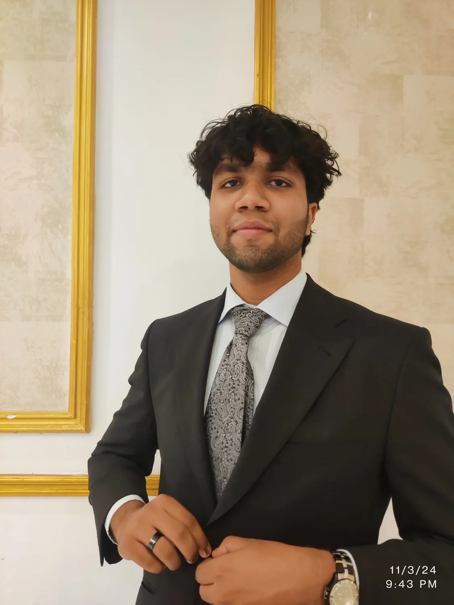

Poetry
Precision in language becomes clarity in interfaces, requirements, and technical explanations.
Words carry structureAbout me · Two worlds, one way of thinking
I bring the attentiveness of poetry and music to the structure of software—looking for patterns, questioning assumptions, and building systems people can understand.
Explore the story
PakistanWhat I carry with me
Growing up in Pakistan gave me a relationship with poetry, music, and thoughtful conversation. Studying computer science in Canada gave those instincts a new medium: systems, interfaces, research, and code.
I do not see those parts of myself as separate. Poetry teaches me that every word has weight. Piano teaches patience, rhythm, and how individual notes become a whole. Critical reflection helps me slow down long enough to find the real problem before I build the solution.
Roots → perspective → practice
Move through the ideas that shape how I design, research, and solve problems.
Precision in language becomes clarity in interfaces, requirements, and technical explanations.
Words carry structureRhythm, patience, and pattern recognition help me understand how separate parts behave as one system.
Patterns create harmonyPausing before acting helps me diagnose causes instead of rushing toward the first visible symptom.
Notice before changingQuestioning assumptions reveals tradeoffs, edge cases, and more useful ways to frame a problem.
Ask a better questionA change in coordinates
The distance changed my surroundings. It also widened the way I see a problem.
Moving between cultures made me more attentive to context: who is in the room, what a product assumes, and how differently people can experience the same system.
Hover, focus, or tap the globe to replay the route.
The path so far
Scroll to guide the little builder through the moments that shaped my work.
Poetry, piano, reflection, and thoughtful conversation taught me to notice patterns and give ideas time to develop.
Listen deeplyIn Canada, those instincts met algorithms, systems thinking, teamwork, and technical communication.
Question assumptionsA multi-page volleyball site and work with SERPA made accessibility, audience needs, and clear information architecture tangible.
Explore the KVA projectAndroid research and collaborative product work strengthened my approach to experimentation, usability, APIs, and team integration.
See the collaborationSelf-healing disaster routing and a multi-provider LLM gateway pushed me toward resilient systems, evaluation, and decisions grounded in evidence.
Read the research storyI am continuing to explore computer vision, full-stack systems, and opportunities where thoughtful engineering can solve meaningful problems.
Start a conversationHow I solve problems
My process moves between empathy and engineering. Select a step to see what it means in practice.
Understand the people, constraints, and context around a problem before deciding what the technology should do.
In practice: separating the needs of youth players, adult players, and organizers for the KVA website.The thread through it all
“I bring reflection to technical problems and structure to creative ideas.”
That combination helps me build systems that are rigorous, understandable, and attentive to the people who use them.
Continue the story